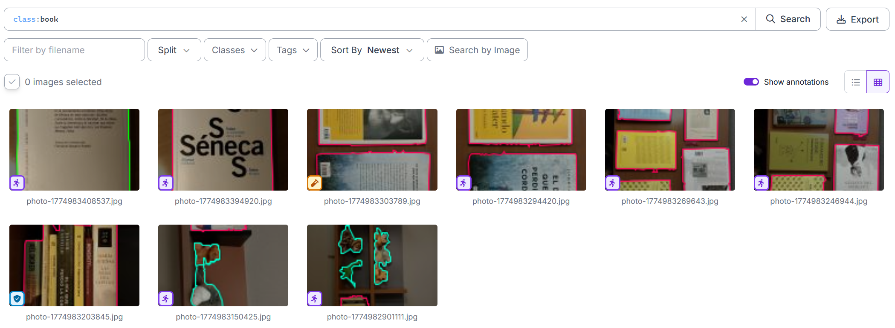
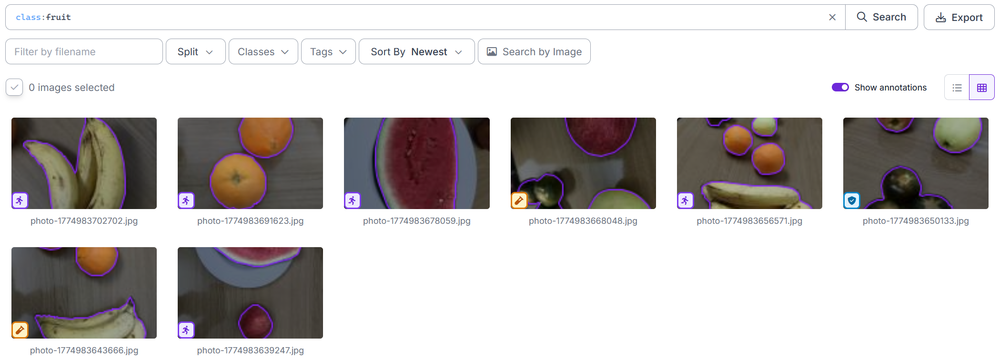
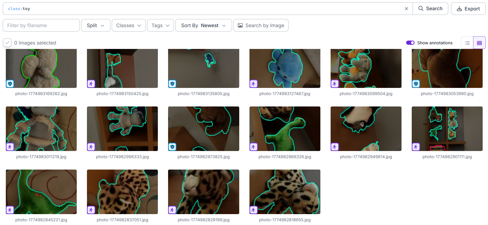
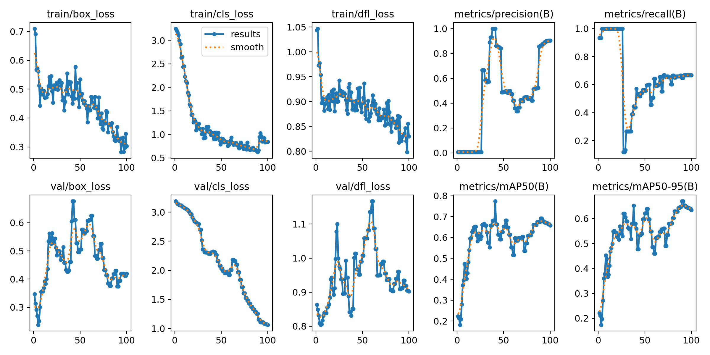
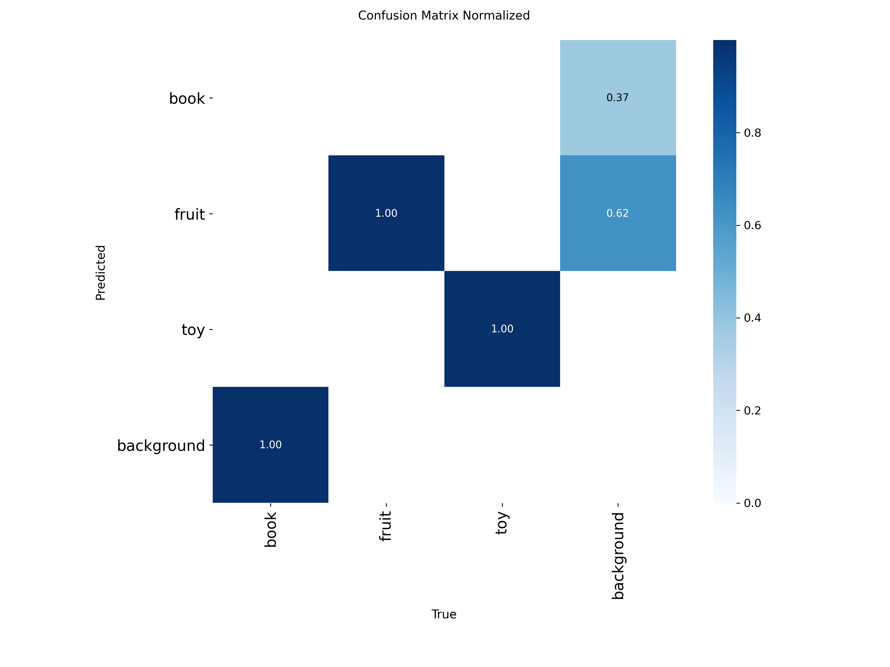
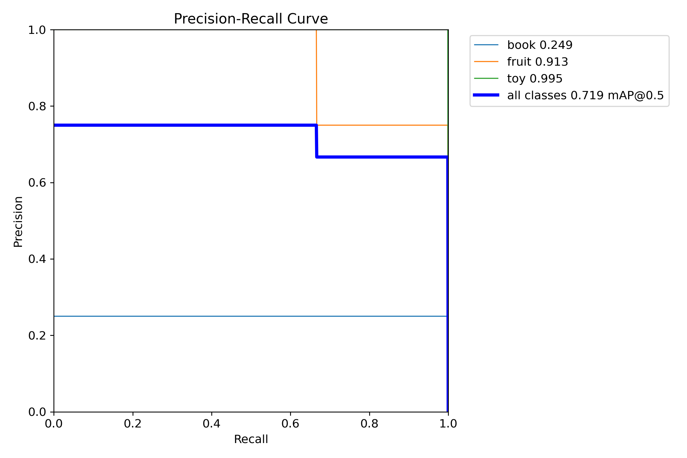
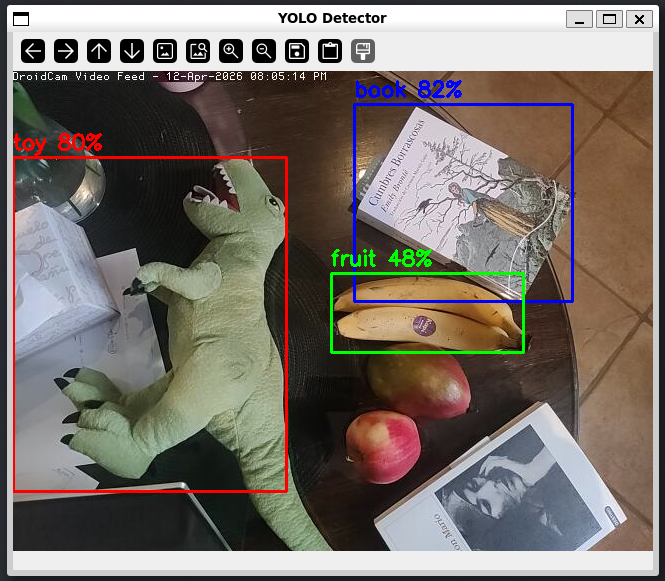
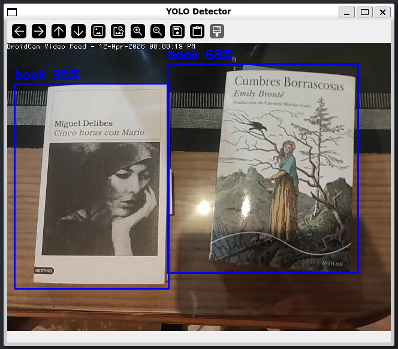
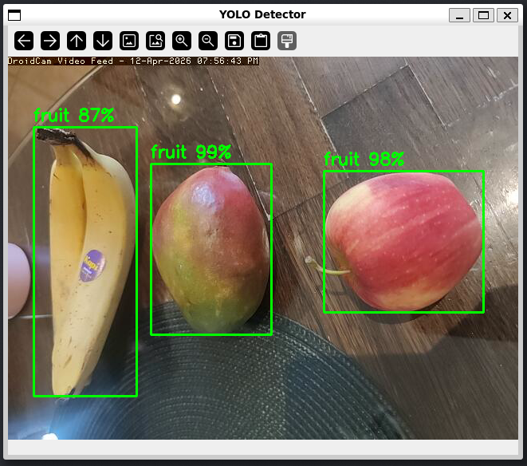
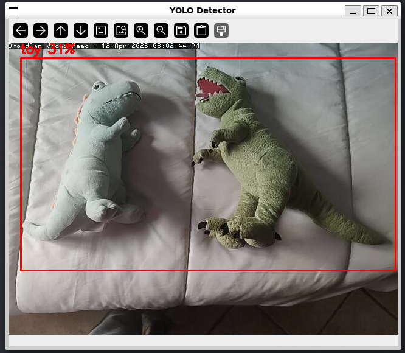

Deep Learning — Detector YOLO¶
Descripción¶
Fine-tuning de YOLO11n (Ultralytics) sobre un dataset propio de objetos domésticos con tres clases: book, fruit, toy. La inferencia corre en un hilo separado para no bloquear el stream de vídeo.
Requisitos y ejecución¶
Entorno
Python 3.10+, Ultralytics 8.x, PyTorch 2.x.
# Entrenar el modelo (genera best.pt en runs/detect/train/weights/)
python dl/train.py
# Inferencia en tiempo real
python dl/run.py
Fichero de modelo necesario
run.py lanza FileNotFoundError si best.pt no existe en la ruta esperada. Ejecuta train.py al menos una vez antes de lanzar la inferencia.
Métricas tras el entrenamiento
Los valores de mAP50, Precisión y Recall se encuentran en la última fila de runs/detect/train/results.csv, en las columnas metrics/mAP50(B), metrics/mAP50-95(B), metrics/precision(B) y metrics/recall(B).
Arquitectura¶
flowchart LR
A[Imágenes propias\nRoboflow] --> B[data.yaml\nYOLOv8 format]
B --> C[train.py\nYOLO11n fine-tuning\n100 epochs, imgsz=640]
C --> D[best.pt\nmodelo guardado]
D --> E[run.py\nYOLOInferenceThread]Dataset¶



Parámetros clave¶
Dataset¶
| Parámetro | Valor |
|---|---|
| Clases | book, fruit, toy |
| Imágenes totales | 30 |
| Formato | YOLOv8 (YOLO txt labels) |
| Fuente | Roboflow (workspace: viaael) |
Entrenamiento¶
| Parámetro | Valor | Descripción |
|---|---|---|
BASE_MODEL |
yolo11n.pt |
Preentrenado en COCO |
EPOCHS |
100 | Épocas de fine-tuning |
IMGSZ |
640 | Resolución de entrenamiento |
HSV_S |
0.7 | Aumentación de saturación |
HSV_V |
0.4 | Aumentación de brillo |
SCALE |
0.5 | Aumentación de escala |
DEGREES |
15 | Rotación máxima |
Parámetros de aumentación
Con solo 30 imágenes, la aumentación es crítica. HSV_S=0.7 y HSV_V=0.4 cubren variaciones fuertes de iluminación; SCALE=0.5 simula diferentes distancias al objeto. Sin aumentación el modelo sobreajustaría en pocas épocas.
Inferencia¶
| Parámetro | Valor | Descripción |
|---|---|---|
INFER_SIZE |
320 px | Resolución de inferencia (reducida para velocidad) |
CONF_THRESH |
configurable | Umbral de confianza para mostrar detección |
INFER_SIZE: precisión vs latencia
A imgsz=640 la inferencia tarda ~250 ms en CPU — demasiado para el bucle principal. Con INFER_SIZE=320 baja a ~80 ms a costa de algo de precisión en objetos pequeños.
Código clave¶
Entrenamiento¶
Resultados del entrenamiento¶



Cómo rellenar las métricas
Tras ejecutar train.py, abre runs/detect/train/results.csv y copia los valores de la última fila en las tarjetas de arriba:
metrics/mAP50(B) → mAP50, metrics/mAP50-95(B) → mAP50-95, metrics/precision(B) → Precisión, metrics/recall(B) → Recall.
Inferencia en tiempo real¶




Decisiones de diseño¶
YOLO11n y fine-tuning sobre COCO¶
YOLO11n es la variante más ligera — menos parámetros, más rápida en CPU, suficiente para tres clases sobre objetos domésticos grandes. Partir de los pesos preentrenados en COCO tiene sentido porque COCO ya incluye categorías visualmente parecidas a book, fruit y toy; el fine-tuning solo ajusta las capas finales a las clases propias. Con 30 imágenes, entrenar desde cero no sería viable.
Aumentación agresiva para compensar el dataset pequeño¶
Con solo 30 imágenes el modelo vería exactamente los mismos ejemplos cientos de veces en 100 épocas sin aumentación (→ ver parámetros en train.py, línea 1). El riesgo es que con un dataset tan pequeño el split train/val puede acabar con ejemplos de validación muy parecidos a los de entrenamiento, haciendo las métricas más optimistas de lo que son en la práctica.
Hilo de inferencia separado¶
YOLO11n a imgsz=640 tarda ~250 ms en CPU. YOLOInferenceThread (→ ver run.py, línea 24) lee frames de un buffer compartido, corre la inferencia y escribe los resultados bajo un lock. El hilo principal dibuja los bounding boxes del último resultado disponible sin esperar al siguiente, manteniendo el stream fluido.
fruit como clase problemática¶
book y toy son categorías visualmente compactas. fruit agrupa objetos con formas, colores y tamaños muy distintos (manzana, plátano, naranja). Con pocas imágenes por subclase el modelo aprende rasgos específicos y generaliza mal. La solución sería restringir la clase a una sola fruta o aumentar el dataset en esa categoría concreta.
Limitaciones¶
Limitaciones conocidas
- Dataset muy pequeño (30 imágenes): el modelo puede sobreajustarse a condiciones de captura específicas.
- El split train/val usa el mismo conjunto; las métricas de validación son optimistas.
- La clase
fruites muy heterogénea (manzana, plátano, naranja…): la generalización es más difícil. - Si
best.ptno existe,run.pylanzaFileNotFoundErrorinmediatamente.